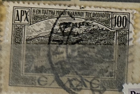
| SOURCE | TITLE| IMAGE MATCH | click to source page |
| eBay | GREECE - USED STAMP, 100 Dr - 1947. | eBay | 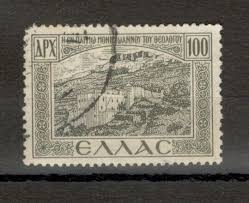 |
| Alamy | Postage stamp from Greece in the Post & Philately series issued in 2005 Stock Photo - Alamy | 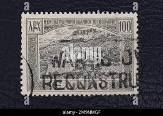 |
| Alamy | Postage stamp from greece hi-res stock photography and images - Alamy | 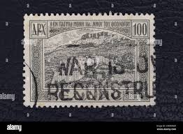 |
| Shutterstock | Greece Circa 1950 Cancelled Postage Stamp Stock Photo 2361770245 | Shutterstock | 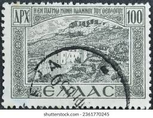 |
| Shutterstock | Greek Stamp Island: Over 426 Royalty-Free Licensable Stock Photos | Shutterstock | 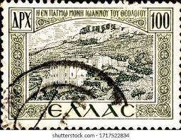 |
| Dreamstime.com | Consegna Stock Photos - Free & Royalty-Free Stock Photos from Dreamstime | 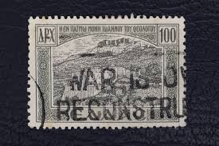 |
| Does anyone know what note was written on this small piece of paper? It was with some old Greek stamps. Thanks. | 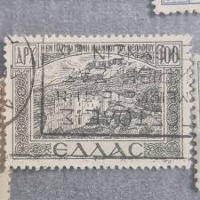 | |
| Todocolección | grecia 100 apx, año 1931. - Buy Antique stamps of Greece on todocoleccion | 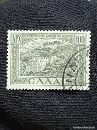 |
| Delcampe | Search in the "Used stamps" category | Delcampe | 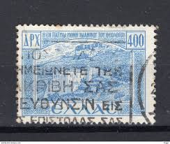 |
| Shutterstock | Bulgaria 1918 1 Stotinka Grey Postage Stock Photo 2249396897 | Shutterstock | 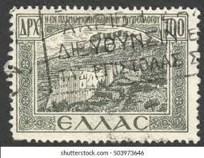 |
| eBay | Greece Stamp Scott #444, Used | eBay | 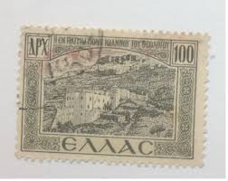 |
| eBay | Vintage lot of 4 Stamps, Connected, Greek Greece, 400, estimate mid century | eBay | 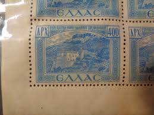 |
| Todocolección | grecia 100 apx, año 1931. - Compra venta en todocoleccion | 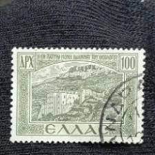 |
| eBay | Greece Postage Stamp Used | eBay | 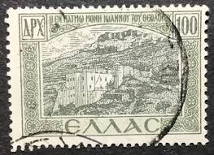 |
| Shutterstock | Karnal Haryana India -august 8th 2025-closeup Stock Photo 2674716471 | Shutterstock | 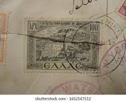 |
| Stamp Auction Network | Prices Realized | 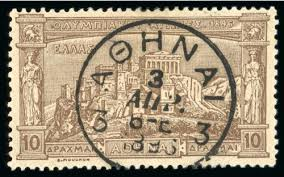 |
| eBay | Greece 100d Panorama Old 30th Used postal stamp | eBay | 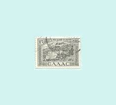 |
| Stamp Community Forum | Rare Greece Inverted?? 1 Other Odd Greece Cant Find In Book - Stamp Community Forum | 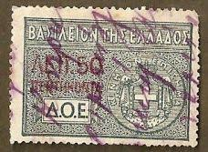 |
| eBay | Lot of 38 Greek Stamps --- 2,3,4 Strip Connected --- Scott #509 - #616 --- Multi | eBay | 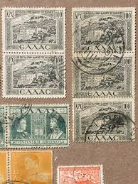 |
| HipStamp | Popular Listings in Europe > Greece / HipStamp | 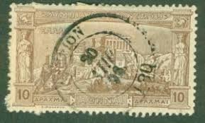 |
| eBay | Greece 338 used | eBay | 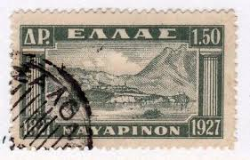 |
| eBay | Greece 338 used | eBay | 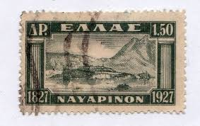 |
| eBay | Greece 1913 Postage Due Stamp MNH Rare Stampbook1-320 | eBay | 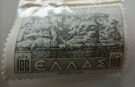 |
| eBay | Greece GREECE Billet 2 DRACHMAI 1917 P306 A2 RARE GOOD CONDITION | eBay | 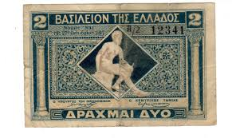 |
| Etsy | Kastoria Greece Stamp Poster: Vintage Travel Art Print - Etsy | 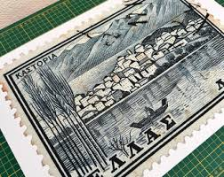 |
| eBay | Greece Stamp Scott #338, Used | eBay | 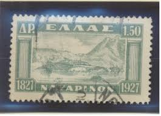 |
| eBay | Greece 1953 Sc# RA89 Mint MLH Welfare Postal Tax Earthquake support🔥 🔥 | eBay | 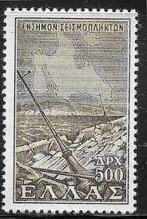 |
| eBay | 2x 50 Lepta 1, 2 Drachmai - Issue 1917 - 1920 - Reproduction - 47 | eBay | 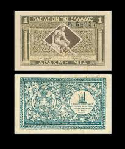 |
| eBay | Greece 1946-50 Postal staff Welfare fund 20d violet surcharge MNH VF. | eBay | 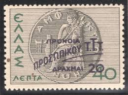 |
| eBay | 2x 20 - 100 Million Drachmas - Issue 1944 - Reproduction - 17 | eBay | 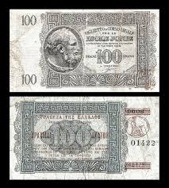 |
| eBay | 1906 GREECE🔥Special Olympic Games ATHENS🔥Sc#193 Atlas & Hercules Cd:PATRAS | eBay | 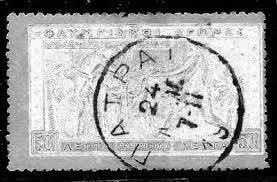 |
| eBay | Greece Stamps 1933 zeppelin airmail MH*(VERY LIGHT HINGE) HELLAS A5-A7 | eBay | 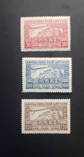 |
| Freestampcatalogue.com | Stamps from Greece - Freestampcatalogue.com - The free online stampcatalogue with over 500.000 stamps listed. | 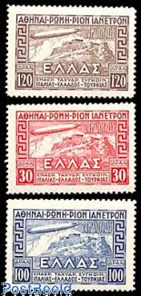 |
| Etsy | Vintage Greece Stamps - 50 Different Stamps 1930's - 1980's - Etsy | 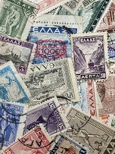 |
| eBay | 1927 GREECE🔥Sc#338 "Bay of NAVARINO and Pios " ship USED VF | eBay | 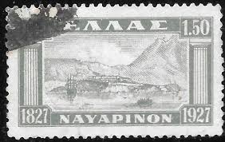 |
| eBay | Greece SG 125 CDS VFU (8gox) | eBay | 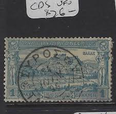 |
| eBay | Greece Kavala 1913 Greek Administration 5 lepta/1ct Overprint MH signed | eBay | 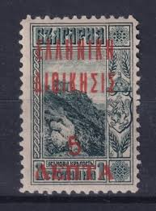 |
| eBay | Greece 1927 From LANDSCAPES I, 2 dr. Vlastos 428 Used (FBox) | eBay | 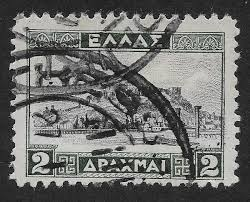 |
| eBay | Stamps EPIRUS Greece 1914 local issue 2 drachma imperf block of 4 cto, uncommon | eBay | 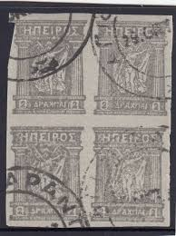 |
| eBay | GREECE - USED STAMP, 2 Dr - 1927. | eBay | 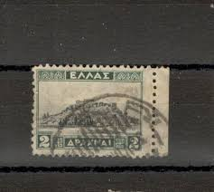 |
| eBay | Greece Vintage Postcard L'Acropole Parthenon Athenes Athens 80 Aenta Rome NY | eBay | 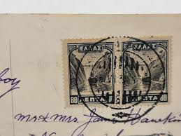 |
| eBay UK | Greece 1926 Banque D Orient 125 Francs Gold OR Coupons Bond Titre Loan Share | eBay UK | 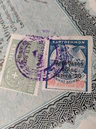 |
| eBay | Greece 1953 Sc# RA89 Mint MLH Welfare Postal Tax Earthquake support🔥 🔥 | eBay | 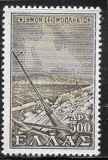 |
| eBay | Greece 1933- Mint never hinged stamps (MNH). Mi Nr.: 352/354..... (EB) AR-00332 | eBay | 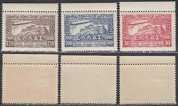 |
| eBay | Greece Scott #479 Mint No Gum | eBay | 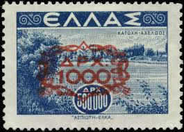 |
| eBay | GREECE 125 USED - NO FAULTS EXTRA FINE! | eBay | 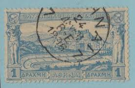 |
| eBay | KE01 - Greece 1901 General revenue fiscal stamps selection, ΔΟΕ . | eBay | 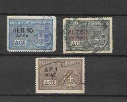 |
| eBay | GREECE 1933 352-354 ** MNH VERY BEAUTIFUL SET ZEPPELIN (F9303 | eBay | 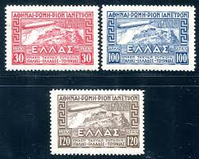 |
| eBay | GREECE Stamp - 1927 Centenary Liberation of Athens Red Overprint Used r20 | eBay | 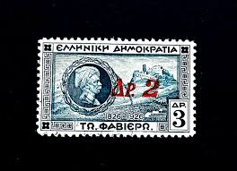 |
| eBay | Greece (8) Stamps Mixed Lot Used Hinged Free US Shipping | eBay | |
| eBay | GREECE 338 - Battle of Navarino "Bay of Navarino and Pylos" (pc28113) | eBay | |
| eBay | Greece #376 used, 377 MH CV$2.75 | eBay | |
| Etsy | Vintage Greece Stamps - 50 Different Stamps 1930's - 1980's - Etsy Canada | |
| daliborvukic.com | HOLLYWOOD COLLECTIBLES Amanda Beard Autographed First Day Cover | |
| eBay | GREECE #162-63 Used - 1900 Surcharged Issues | eBay | |
| Mercari | bill Greece 500 Drachmai 1944 WWII World | Mercari | |
| eBay | AMAZING LOT OF GREECE STAMP BLOCKS, MINT, USED AND OVERPRINTS | eBay | |
| tricityeyehospital.com | This is a set of 13 postage stamps, vintage greece different denominations | |
| eBay | APX 1500 Postage Greece Stamp Orange Used No Gum | eBay |